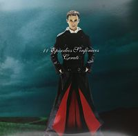
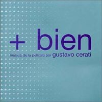
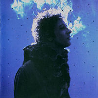
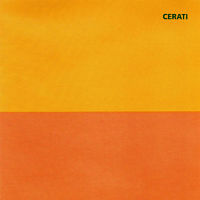
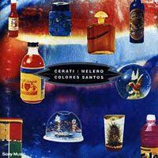
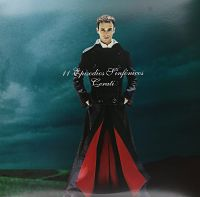
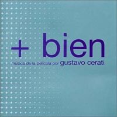
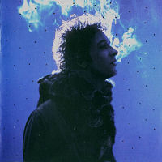
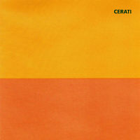
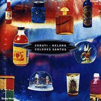

Biografia
Gustavo Adrián Cerati nació en el barrio Villa Ortúzar de la Ciudad de Buenos Aires el 11 de agosto de 1959. A pesar de haber sido el cantante de Soda Stereo, participó en distintos proyectos, como lo fue el disco “Colores Santos” (1992) junto a Daniel Melero. En 1993 edita el disco “Amor Amarillo” que incluye el conocido tema “Te Llevo Para Que Me Lleves”. Al disolverse Soda en 1997 se alejó por un tiempo de los escenarios pero regresó en 1999 con su tercer disco solista, titulado “Bocanada”. En el año 2001 graba “11 Episodios Sinfónicos”, un álbum en vivo, con temas propios y compartidos. Cerati grabó este álbum junto a una orquesta de 43 músicos. Versiones de los temas éxito de Soda Stereo transformados a un estilo clásico-sinfónico, junto con canciones de su carrera solista. En el año 2002 presenta su disco “Siempre Es Hoy”, con el tema de difusión “Cosas Imposibles”. Al año siguiente sale un disco con nuevas versiones de "Siempre Es Hoy" y en el 2004 un disco de éxitos: “Canciones Elegidas 93-04”, su primer CD+DVD. En 2006 lanza al mercado su nuevo material bajo el nombre de "Ahí Vamos", presentado oficialmente en mayo en el Estadio Pepsi Music y con el cual cosechó varios galardones y reconocimientos. En 2009 lanzó "Fuerza Natural", el nuevo disco de estudio compuesto por 13 canciones, para el sello Sony Music. En la madrugada del domingo 16 de mayo de 2010 sufrió un ACV (accidente cerebrovasuclar), tras presentarse en concierto en Caracas, Venezuela, cuya gira tuvo el mismo nombre que su último disco. A dos años del lamentable episodio, en mayo de 2012, el músico se encuentra internado en la clínica ALCLA de la Ciudad de Buenos Aires, bajo tratamiento multidisciplinario para provocar respuestas neurológicas. El 11 de agosto de 2014 su madre festejó los 55 años del cantante dándole esperanza al mundo entero, al relatar que Gustavo movió las manos en algunas oportunidades. Gustavo Cerati falleció a causa de un paro respiratorio el 4 de septiembre de 2014 en ALCLA, la clínica donde se encontraba monitoreado por especialistas desde hacía más de 4 años. Su despedida se llevó a cabo en la Legislatura Porteña, ya que el músico gozaba del galardón de "Ciudadano Ilustre de Buenos Aires". Gustavo se casó con Cecilia Amenábar, con quien tuvo dos hijos: Benito y Lisa. El 2 de junio de 2015 se edita el primer álbum póstumo de Gustavo, titulado "Cerati Infinito". Es un CD+DVD compuesto por 19 canciones elegidas de los discos editados en su carrera solista. En el booklet se incluyen dos poemas dedicados al artista: uno de Luis Alberto Spinetta y el otro de Lillian, la mamá de Cerati. El 13 de febrero de 2017 se pone en marcha la obra (mural que resumirá la vida del músico) que le dará el nombre de "Gustavo Cerati" al paso bajo nivel ubicado entre Av. Beiró y las vías del ex Ferrocaril Urquiza, en el barrio Agronomía de la Ciudad de Buenos Aires. El 14 de marzo se lleva a cabo la inauguración. El 10 de agosto de 2018 sale a la venta un álbum titulado "Satélite Cerati", compuesto por 14 canciones en las que Cerati participó como invitado durante 1998 y 2009. Incluye temas con Spinetta, Mercedes Sosa, Bajofondo, Fabiana Cantilo, Leo García, Emmanuel Horvilleur, Lito Vitale, D-Mente, No Lo Soporto y otros. La canción elegida como adelanto es "Tráeme la Noche", grabada con Andy Summers, guitarrista de The Police.

 








